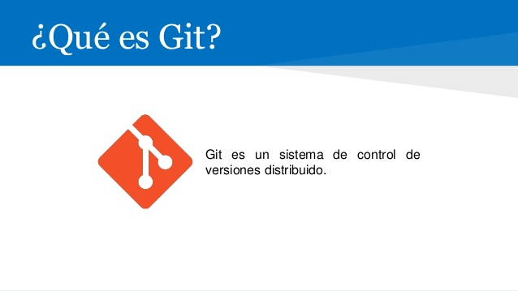

GIT
Git (pronunciado "guit" ) es un software de control de versiones diseñado por Linus Torvalds, pensando en la eficiencia y la confiabilidad del mantenimiento de versiones de aplicaciones cuando éstas tienen un gran número de archivos de código fuente. Al principio, Git se pensó como un motor de bajo nivel sobre el cual otros pudieran escribir la interfaz de usuario o front end como Cogito o StGIT. Sin embargo, Git se ha convertido desde entonces en un sistema de control de versiones con funcionalidad plena. Hay algunos proyectos de mucha relevancia que ya usan Git, en particular, el grupo de programación del núcleo Linux.
Github trabaja con Git como sistema de control de veriones.
Para empezar a trabajar es necesario tener instalado git en nuestra máquina. Hay alguna diferencia si trabajas en Windows, Linux o Mac
Git y GitHub
GitHub es una plataforma de desarrollo colaborativo para alojar proyectos usando el sistema de control de versiones Git. Seguro que más de uno ha consultado código fuente en GitHub o descargado algún proyecto de la plataforma.
